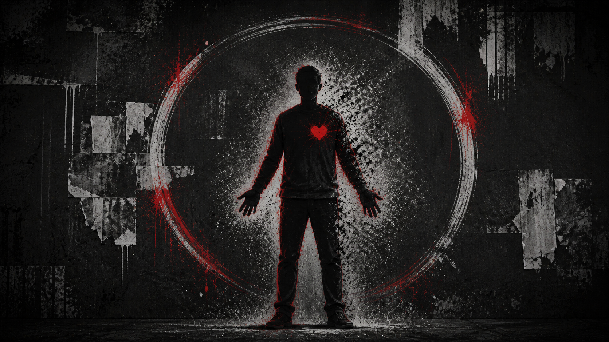

Version 07Authenticity
The Reclaimed Self
Fully visible. Fully your own.

Fully visible. Fully your own.
The voice
I wore borrowed shapes until I forgot my own. They fall away now. This is my voice, my life, and I claim all of it.
The signal